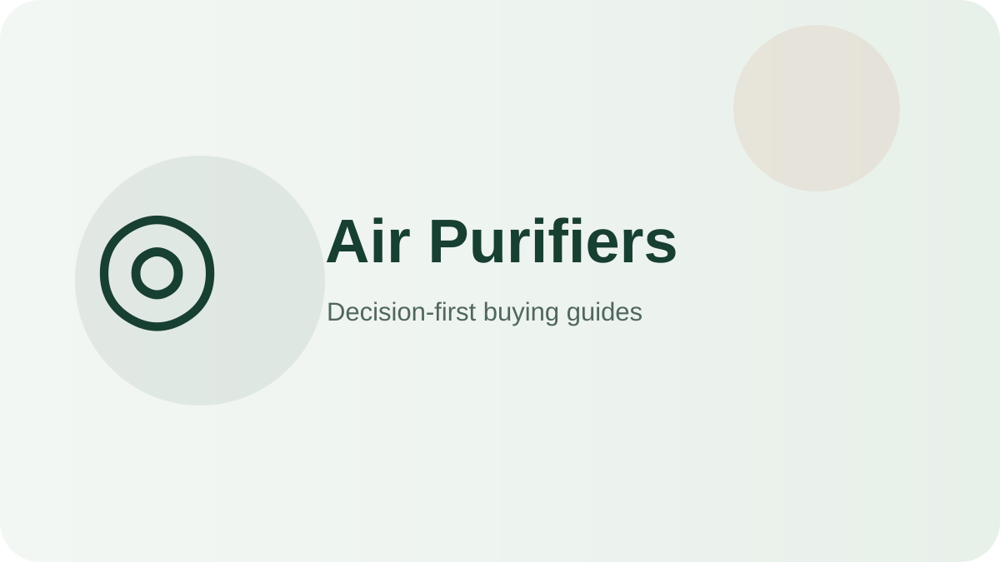

Best balanced smart purifier
LEVOIT Core 400S-P
You want automatic particle control in a main room.
Check on AmazonChoose air purifiers by CADR/room sizing, filter type, replacement-filter cost, noise, and sensor/auto mode—not by feature count alone.

These products cover distinct use cases so you can quickly rule in—or rule out—the right format.
You want automatic particle control in a main room.
Check on Amazon
You need strong circulation in a large room.
Check on Amazon

You value a long-running proven design.
Check on Amazon
You want proven bedroom-class filtration at entry price.
Check on AmazonYou need serious clean-air volume with set-and-forget automation.
Check on AmazonA decision-first shortlist for everyday buyers, with clear trade-offs instead of feature-count rankings.
Read guide →Compact picks and space-saving buying rules for apartments, dorms and crowded counters.
Read guide →Larger-capacity options and the capacity rules that matter when several people share one appliance.
Read guide →Value-focused picks that prioritize the features you actually use and skip expensive extras.
Read guide →A practical guide to sizing, features, cleanup, durability and avoiding overbuying.
Read guide →A side-by-side decision framework for separating meaningful differences from marketing noise.
Read guide →A practical after-use routine, deep-cleaning schedule and part-replacement plan that keeps an air purifier performing like new for years.
Read guide →The most common ways buyers overspend or under-buy when choosing an air purifier, with the decision rule that prevents each one.
Read guide →A line-item look at what higher prices buy in air purifiers, when the upgrade pays off daily, and when the budget pick is the smarter move.
Read guide →